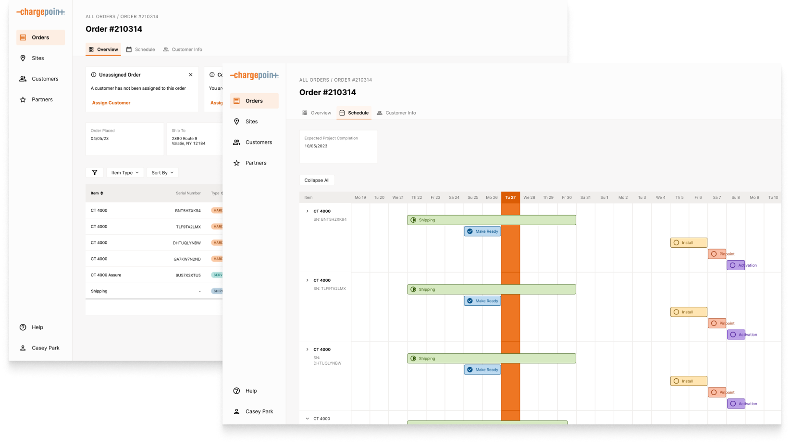

Guardian
Team: Product Managers, UX Researcher
I designed an order management tool that aimed to improve compliance, centralize data collection, and reduce customer confusion in order to reduce cycle time and customer dissatisfaction.
Problem Scope
ChargePoint shifted to selling stations via a distribution model to better capture geographies and markets, as direct sales require more time and interaction with customers. While sales volume increased, delays, low quality installs, and poor responsiveness caused ChargePoint to loose customers and renewals.
Findings
Looking over the insights presented by my research colleague, it was clear most issues at insall and activation were due to missing or inaccurate data. ChargePoint staff were reaching out to customers to collect vital information, but emails were unread, lost in inboxes, or sometimes sent to the wrong point of contact.
Our solution needed to resolve three major issues:
- Highly distributed communications With so many actors involved with the station lifecycle, no single team owns the process nor does anyone have a singular view. Customers receive calls and emails from multiple contacts from ChargePoint, the installer, contractors, and station suppliers, and vice versa. Communications are not centralized anywhere and critical points of decision-making frequently fall through the cracks.
- Opaque station lifecycle processes Throughout the station lifecycle are key tasks and events. For example, if certain information about a site is missing, activations cannot proceed with getting stations live. Actors, which may be the install team or the end customer, are often unaware of their critical role and critical actions. They often do not know who or where to escalate issues to and support struggles to reach the right contacts. A contact provided at the point of sale may not be a relevant contact when a station install is done several years later.
- Labor intensive and brittle data capture Research cataloged over 100 mandatory data fields throughout the sales, install, and activation process. These data fields are captured and transferred across multiple channels, including email, PDF, phone, web form, and Excel. Sales partners may have there own methods for collecting and transferring data, further complicating the data capture process. Such manual data collection processes are prone to error, leading to downstream delays and issues.
Explorations
With the project manafers, we determined that an order tracking system that allowed sales and support to see order information and track data, with a view for customers as well, could potentially reduce challenges in collecting and transferring data and improve customer satisfaction. I engaged in a co-design process with the team to understand intervention points and feature requirements. I rapidly developed wireframes for review with PMs, harnessing their insights to innovate and solve problems effectively.
Resolution
Flexible Data Ontology
While I started designing with a single point of entry in mind (orders as the primary "unit"), it became clear that some flexibility in the ontology was necessary to accomodate the many types of customers. Some will have one order for one site, others will have multiple orders going to multiple sites. Some projects can be done within a few months, others take years. Presenting multiple entry poins (orders, sites, customers) allows ChargePoint representatives to untangle and manage customers according to their own personal mental models.
A Gant chart view of each order and site's progress ensures customers are aware of the project timeline and necessary steps they need to take to ensure timely charger delivery and install.
Data collection is centralized within the Guardian product. ChargePoint staff and customers can easily see where data is inaccurate or missing and work concurrently to resolve data issues. Customers that are confused by data requests can quickly and easily access relevant documentation or reach support for clarification.